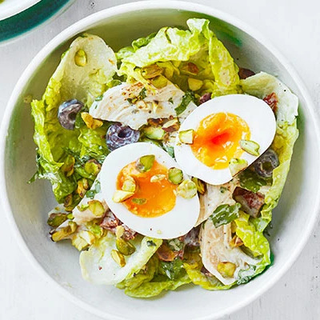

Chicken & Pistachio Salad

Toss chicken breast, boiled eggs, Little Gem, sundried tomatoes and toasted nuts in a zesty dressing for a quick salad that's rich in calcium, folate and iron
Serves 2 | Takes 17 mins
Original recipe: https://www.bbcgoodfood.com/recipes/chicken-pistachio-salad